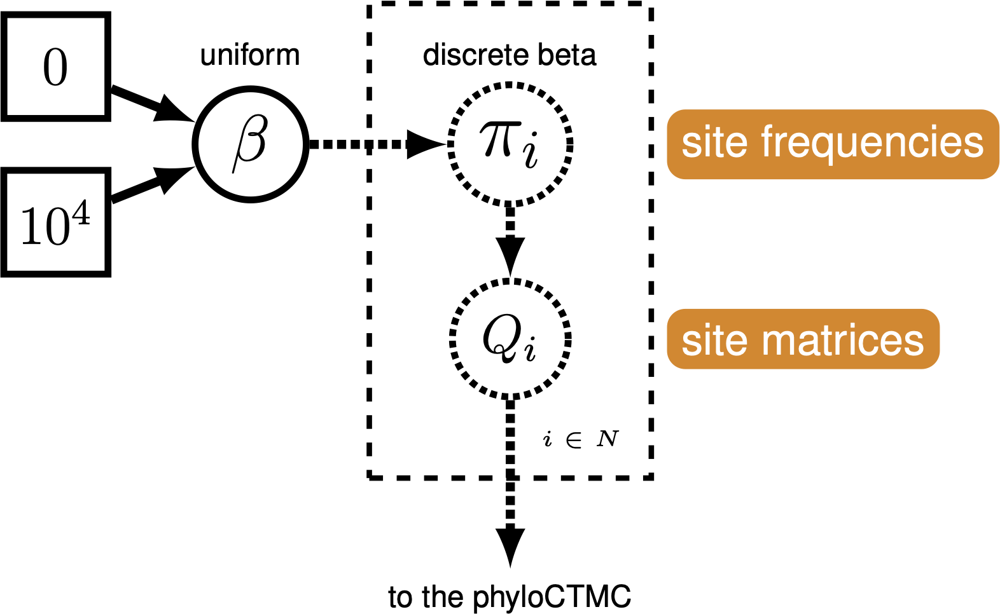
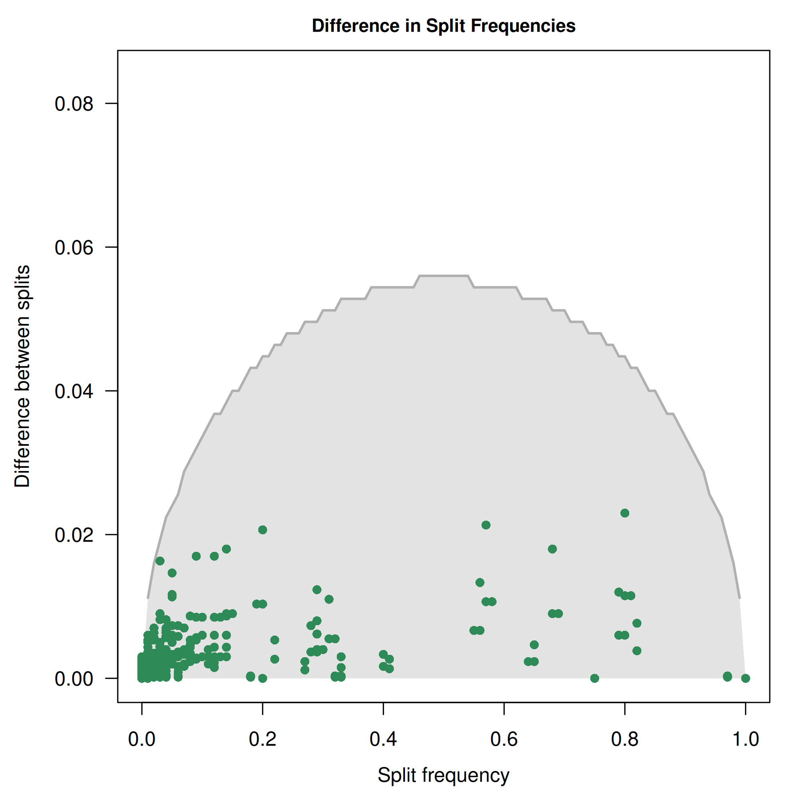
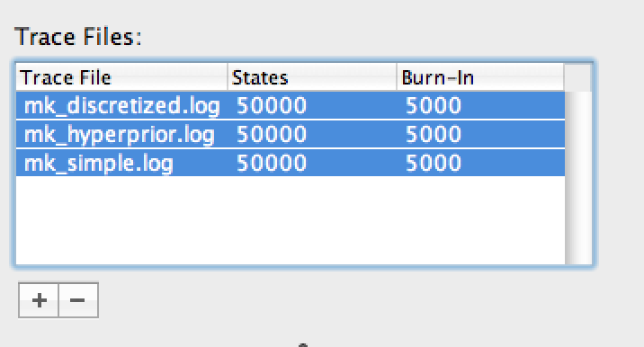
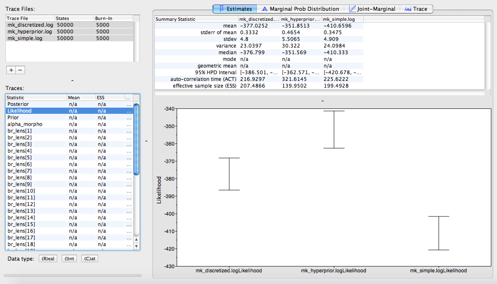
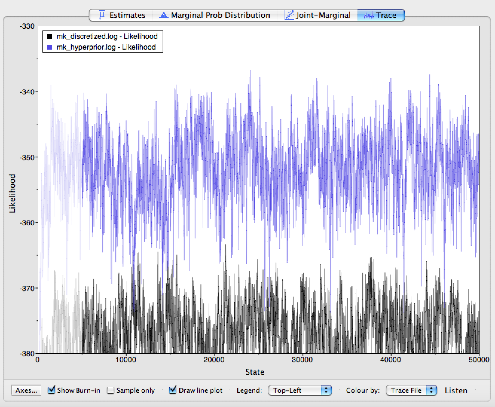
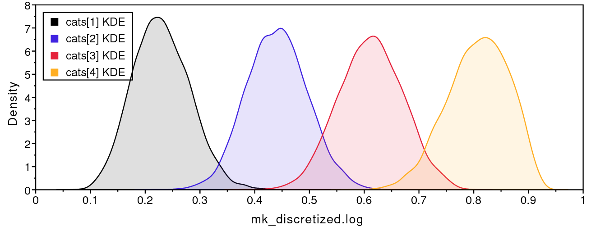
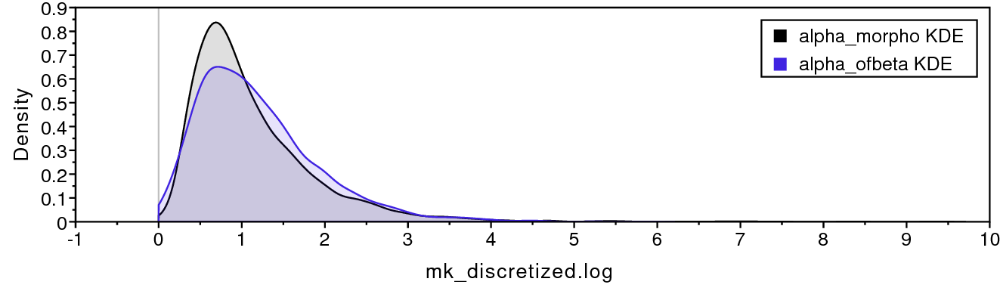

The Mk model makes a number of assumptions, but one that may strike you as unrealistic is the assumption that characters are equally likely to change from any one state to any other state. That means that a trait is as likely to be gained as lost. While this may hold true for some traits, we expect that it may be untrue for many others.
RevBayes has functionality to allow us to relax this assumption. Recall from Nucleotide substitution models that stationary frequencies impact how likely we are to see changes in a character. For example, it may be very likely, in a character, to change from 0 to 1. But if the frequency of 0 is very low, we will still seldom see this change.
We can exploit the relationship between state frequencies and observed changes to allow for variable Q matrices across characters (). This tutorial shows how to do this for binary characters using a discretized Beta distribution. This is an example of a mixture model: there are assumed to be subdivisions in the data, which may require different parameters (in this case, state frequencies). These subdivisions are not defined a priori. The model has previously been shown to be effective for a range of empirical and simulated datasets (Wright et al. 2016).

We continue to build on the bears dataset and the Gamma-ACRV model from Discrete morphology - Among-character rate variation.
Make a copy of
model_ACRV_gamma.Revand call it model_freqs_beta.Rev. Make a copy ofmcmc_mkv_gamma.Revand call it mcmc_mkv_beta.Rev. You will need to modify theRevcode provided in this section in these files.
We will use a discretized Beta distribution to place a prior on state
frequencies. The Beta distribution has two parameters, $\alpha$ and
$\beta$. These two parameters specify the shape of the distribution.
State frequencies will be evaluated according to this distribution, in
the same way that rate variation is evaluated according to the Gamma
distribution. The discretized distribution is split into multiple
classes, each with its own set of frequencies for the 0 and 1 characters.
The number of classes can vary; we have chosen 5 for tractability. Note
that we need to make sure that this discretization results in a
symmetric model, therefore we will use only one parameter for the Beta
distribution: beta_scale so that $\alpha = \beta$.
num_cats = 5
Second, we specify the parameter of the Beta distribution. This
parameter beta_scale is drawn from a lognormal distribution, similar
to the suggestion of the prior on Gamma rate categories (Fabreti and Höhna 2023).
beta_scale ~ dnLognormal( 0.0, sd=2*0.587405 )
beta_scale.setValue( 1.0 )
moves.append( mvScale(beta_scale, lambda=1, weight=5.0 ) )
Next, we set the categories to each represent a quadrant of the Beta
distribution specified by the beta_scale.
cats := fnDiscretizeBeta(beta_scale, beta_scale, num_cats)
Using these state frequencies, we will generate a new vector of Q
matrices. Because we are varying the state frequencies, we must use a Q
matrix generation function that allows for state frequencies to vary as
a parameter. We will, therefore, use the fnF81 function.
for (i in 1:cats.size()) {
Q[i] := fnF81(simplex(abs(1-cats[i]), cats[i]))
}
Additionally, in RevBayes we need to specify the probabilities that a site evolves according to one
of the $Q$-matrices. For this model the probabilities must be equal because we need to guarantee that
the model is symmetric. Thus, we use a simplex function to create a vector that sums to 1.0.
matrix_probs <- simplex( rep(1, num_cats) )
The only other specification that needs to change in the model
specification is the CTMC, which now takes the vector of Q matrices and
the siteMatrices argument telling it how likely each matrix is to
apply to any given character:
phyMorpho ~ dnPhyloCTMC(tree=phylogeny, siteRates=rates_morpho, Q=Q, type="Standard", coding="variable", siteMatrices=matrix_probs)
phyMorpho.clamp(morpho)
Remember to change all output filenames, e.g., from
output/mkv_gamma.logtooutput/mkv_beta.log.
Run mcmc_mkv_beta.Rev. This estimation will take longer than the
previous ones, due to increased model complexity.

convenience (Fabreti and Höhna 2022). Here we show the difference in split frequencies. These runs have converged for us.We will use Tracer to evaluate the MCMC samples from our three
estimations (mkv, mkv_gamma, mkv_beta). Load all three of the MCMC
logs into the Tracer window. Highlight all three files in the upper
left-hand viewer () by right- or command-clicking
all three files.

Once all three trace logs are loaded and highlighted, first look at the estimated likelihoods. You will notice that the plain Mkv model is improved by allowing rate heterogeneity, and improved further still by also allowing state-frequency heterogeneity (). Likely, we would need to perform stepping-stone model assessment to truly tell whether the more complicated model is statistically justified; you will find instructions for performing that analysis in General Introduction to Model selection.

Click on the Trace panel. In the lower left hand corner, you will
notice an option to color each trace by the file it came from. Choose
this option (you may need to expand the window slightly to see it). Next
to this option, you can also see an option to add a legend to your trace
window. The results of this coloring can be seen in
. When the coloring is working, you will see that
the plain Mkv model mixes quite well, but that mixing becomes worse as we
relax the assumption of equal state frequencies. This is because we are
greatly increasing model complexity. Therefore, we would need to run the
MCMC chains longer if we were to use these analyses in a paper.

We are also interested in characterizing the degree of heterogeneity
estimated by the beta-discretized model. If the data were distributed by
a single morphological rate matrix, then we would expect to see very
little variation among the different values in cats, and a very large
value for beta_scale. For example, if beta_scale were 1000, then
that would cause all discrete-beta categories to have values approaching
0.5, which approximates a symmetric Mkv model.


shows that the four discrete-beta state
frequencies do not all have the exact same value. In addition,
shows that the prior on beta_scale is small
enough that we expect to see variance among cats values. If the data
contained no information regarding the distribution of cats values,
then the posterior estimate for beta_scale would resemble the prior.
The majority-rule consensus trees for the plain Mkv model and the beta-discretized model are very similar (). In general, it is important to assess whether your results are sensitive to model assumptions, such as the degree of model complexity, and any mechanistic assumptions that motivate the model’s design. In this case, our tree estimate appears to be robust to model complexity.
The discretized-Beta model only applies to binary characters, because a Beta distribution describes the frequencies of just two states. A natural idea for multistate characters is to draw the state frequencies of each category from a Dirichlet distribution instead, similar to the CAT model for molecular data (Lartillot and Philippe 2004). However, such a model has to respect one important property of morphological data: the state labels are arbitrary. Whether the authors of a matrix call a particular condition “0”, “1”, or “2” is a matter of convention, so the likelihood must not change when the states of a character are relabelled.
For binary characters, the discretized-Beta model guarantees this through the constraint $\alpha = \beta$. Because the Beta distribution is then symmetric, its categories come in mirrored pairs: for every category in which state 0 has frequency $q$, there is another in which it has frequency $1-q$. Swapping the labels 0 and 1 therefore only swaps categories within the mixture and leaves the likelihood unchanged.
For a character with $k$ states, the same guarantee would require every set of frequencies in the mixture to be accompanied by all of its $k!$ possible relabellings: 6 for a three-state character and 24 for a four-state character. Simply drawing frequencies from a symmetric Dirichlet distribution is not enough, because each individual draw is still asymmetric. A Dirichlet mixture model for multistate characters would therefore be wrong. For example, if we relabel the states of a character, say swap state 0 and 2, the likelihood would differ even though the data themselves are exactly the same. For this reason, we do not use such a model in these tutorials. In the activity below, we instead combine the Beta mixture for the binary characters with the standard Mk model for the multistate characters.
As discussed above, the discretized-Beta model only applies to binary
characters. Most real morphological matrices, however, mix binary and multistate characters,
like the cinctan dataset from Discrete morphology - Multistate characters. The
partitioning scheme from that page gives us a natural way to combine the
two: since every state-count partition already gets its own Q matrix, we
can give the binary partition the mixture of asymmetric F81 matrices
from this page, while every partition with three or more states keeps
its i-by-i Jukes-Cantor matrix.
Make a copy of
model_multistate_partition.Revand call it model_multistate_beta.Rev. Make a copy ofmcmc_multistate.Revand call it mcmc_multistate_beta.Rev, and change it to sourcemodel_multistate_beta.Revand write its output tooutput/multistate_beta.*.
Try to modify model_multistate_beta.Rev yourself before looking at the
solution. You will need to:
beta_scale, the discretized Beta categories cats, the
vector of F81 matrices, and matrix_probs exactly as in
, before the loop over state counts.
(Give the vector of Q matrices a different name, such as Q_binary,
so that it does not clash with the Q matrices of the other partitions.)i == 2). If it is, pass the vector of F81 matrices and
siteMatrices=matrix_probs to dnPhyloCTMC; otherwise, use
fnJC(i) as before.rates_morpho) across all partitions.The solution is provided as
model_multistate_beta.Rev and
mcmc_multistate_beta.Rev. The key
change is the if statement inside the loop:
if (i == 2) {
# binary characters: a mixture of F81 matrices with
# Beta-distributed state frequencies
m_morph[idx] ~ dnPhyloCTMC( tree=phylogeny,
Q=Q_binary,
siteMatrices=matrix_probs,
nSites=nc,
siteRates=rates_morpho,
type="Standard")
} else {
# multistate characters: an i-by-i Jukes-Cantor matrix
m_morph[idx] ~ dnPhyloCTMC( tree=phylogeny,
Q=fnJC(i),
nSites=nc,
siteRates=rates_morpho,
type="Standard")
}
Run mcmc_multistate_beta.Rev, then load output/multistate.log (from
Discrete morphology - Multistate characters) and output/multistate_beta.log
into Tracer, and consider:
beta_scale differ from its prior? Small values
mean the binary characters have strongly unequal state frequencies;
very large values mean the model is close to the symmetric Mk model.tree_length compare between the two
analyses?As an extension, try adding ascertainment-bias correction
(coding="variable") to every partition, as described in
Discrete morphology - Multistate characters.
When you are ready, move on to Discrete morphology - The covariomorph model, where we relax another assumption of the Mk model: that a character’s rate of evolution never changes over time.